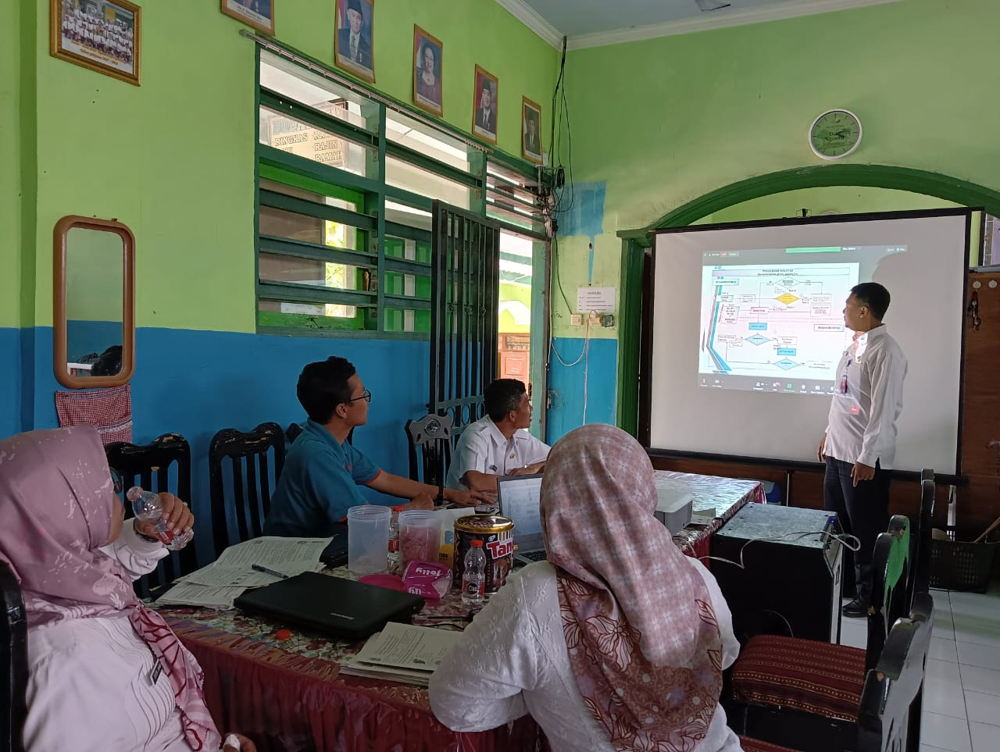

Selamat Datang, Anak Pintar!
Ayo belajar sambil bermain di SDN 3 Ngantru. Tempat di mana imajinasi bertemu pengetahuan, dan setiap hari adalah petualangan baru!
Kunjungi Profil Sekolah

Menu Utama Pembelajaran
🚀 Program Unggulan dan Ekstrakurikuler
Pengumuman dan Informasi Penting
- Jadwal Pendaftaran Siswa Baru (PPDB) Tahun Ajaran Terbaru.
- Pengumuman Hasil Ujian Tengah Semester (UTS).